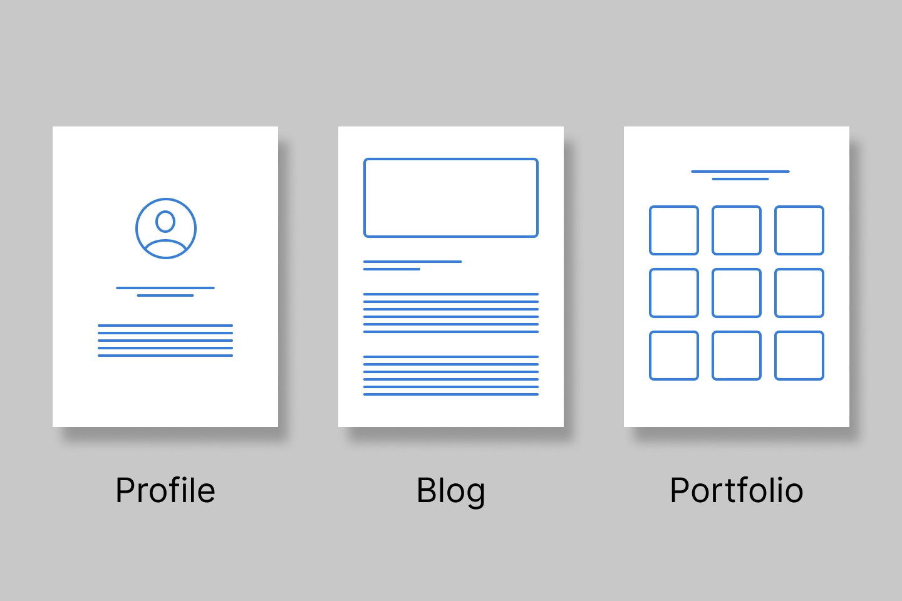

译文｜自建博客哪家强？
假如你想搭个博客，Squarespace、Webflow、静态站点生成器、Medium 这些名字，对你来说想必不会陌生。但正所谓「乱花迷人眼」，选择这么多，真要下手也不是件容易的事。选择在哪儿建站、怎么建站至关重要，会对后面的工作造成极大影响，所以必须先行决定。本文提供一个指南框架，帮助大家做出自己的决定。
指导原则
在深入具体选择之前，我们先明确一些原则，好让选择过程更轻松。
一、莫让选择成障碍
工欲善其事，很容易就会被选什么「器」给绕进去。所以，如果很难下决定，笔者的建议是先随便选一个，坚持用下去。虽然有可能选到不喜欢的，但这总比卡在原地一事无成好得多。
二、我的内容我做主
一般人很容易就会想从 Medium 起步建站，但换作是我，我会尽量避开 Medium。Medium 虽然免费，上手也简单，但代价是，你对发布文章的平台无法掌控，还要受制于别人的产品策略和服务条款。Growth Machine 写了一篇文章，很好地总结了使用 Medium 的好处和坏处。
当然，这也不是说对这些平台就要一刀切地敬而远之。Medium 等平台用作分发渠道还是非常不错的。如果你打算在 Medium 上同时发文，一定记得 设置规范链接（canonical link），免得被搜索引擎认为是重复内容而降低权重。
三、专心做好当下事
做选择时，最好选能最直截了当满足当下需求的那个选项。虽说被一些能满足未来需求的「大而全」吸引也无可厚非，但这就意味着运营所需的成本、维护花费的精力，以及操作起来的复杂程度都会上升，从而阻滞进度。
先问自己
原则制定下来之后，还有一些问题需要自己确认。通过回答这些问题，你可以有效缩小备选项的范围。
一、建站的目的？
明确自己网站的目的很重要。网站主要有三种形式1：
- 履历（Profile）：本质上就是一份电子简历，一般是一张个人照片配一段简短的个人陈述。
- 博客（Blog）：最简约的博客就是将博文集合成目录，每篇博文为一个页面。
- 集锦（Portfolio）：集锦像博客一样包括不同内容，但重点在于展示同一项工作。

二、哪点最重要？
评价不同选项时，需要考虑五2个基本要素，分辨每一项是必不可少、锦上添花，还是可有可无。
- 内容灵活度：是不是有博文、页面这类基本内容就足够了？是否需要集锦展示、笔记这类自定义程度更高的内容类型？
- 样式灵活度：你想对样式有多大程度的把控？是和心里想的大差不差就行，还是要连每一个像素都亲手设计？
- 学习难易度：有的选项上手更容易，有的选项则需要更多的前置知识。
- 迁移便捷度：有的选项迁移网站或内容比较方便，有的则直接把你锁死在平台上。
静态站点生成器
上世纪 90 年代的时候，人们都是手搓 HTML 写静态站点；如今，大多数静态站点都是用静态站点生成器生成的。对于喜欢动手折腾、想要全面掌控的内容创作者，静态站点生成器可谓是完美的工具。以后笔者可能会专门写一篇选静态站点生成器的指南，但在那之前，可以先看看 Netlify 的这篇。
用了静态站点生成器，所有的编辑、写作都可以用你心水的文本编辑器，所有的改动也都可以用 GitHub 等版本控制系统追踪。当然，你也可以用 内容管理系统（content management system, CMS）编辑、储存内容，但那就需要你手动配置 CMS 与静态站点生成器的连接。
静态站点生成器的强大之处在于分离了内容与网站样式。只需用 HTML 和 CSS 制作博文模板，用 Markdown 写作博文内容。之后运行静态站点生成器时，生成器会将 Markdown 文本插入写好的模板，输出包括模板样式和 Markdown 文本内容的静态 HTML 文件。
Netlify、Render 等现代托管服务商可以包揽站点的搭建、托管，你只需将 GitHub 版本库（repository）3 连接至托管方即可。当你在主分支上进行修改，托管方会侦测到修改前后的区别，自动重新搭建、部署站点。这在软件开发中叫做「持续交付」（continuous delivery）4。
那么，静态站点生成器有多符合上面那五个要素呢？
- 内容灵活度：你可以随心所欲安排内容的格式。
- 样式灵活度：只要浏览器支持的都可以实现，可以至简，也可以至繁。
- 学习难易度：这个选项的学习曲线是最陡的。虽然网上有很多教程，但你还是要在终端里输入命令，还得自己 debug。
- 迁移便捷度：在静态站点生成器之间切换比较简单。迁移至网站平台同样可行，但需要费些工夫。
- 成本：Netlify、Render 等托管方在一定带宽范围内免费，超过限额后按 GB 收费。
网站平台
与静态站点相对，网站平台可说是一站式解决方案。要编辑内容，你要登录到线上后台，进行内容管理、模板编辑、用户管理等等。如果支付月费，除了线上后台之外，你还能得到托管、维护、支持等服务。网站平台各有千秋，选择时要考量不同功能。具体探讨之前，先来谈谈网站平台整体的优劣势：
优势：
- 起步快，特别是如果你需要开箱即用的 CMS、评论等功能。
- 维护、托管、性能改进可以交由专人负责。
劣势：
- 你无法把控设计和内容。
- 大多数平台无论流量都会收取月费或年费。
下面这些平台，有的是笔者亲自用过，有的是笔者信得过的朋友推荐过。
Carrd：单页面履历最优选
要想快速搭建单页面网站，Carrd 是不二之选。只需几分钟，就能完成从选模板到添加内容的全流程。

内容灵活度
只支持单页面网站。
样式灵活度
模板数量多，可进行一定程度自定义。
学习难易度
从零到建好网站轻而易举、省时省力。
迁移便捷度
如果想要迁移，可以导出网站的静态版本。
Webflow：十足掌控
Webflow 这家服务商几乎可以复现手敲代码的强大功能性和灵活度。要想全面运用 Webflow 的强大功能，需要对网页设计和开发理念有所了解。

内容灵活度
灵活度与静态站点生成器不相上下，包括引用其他自定内容类型。
样式灵活度
所见即所得（WYSIWYG）编辑器涵盖了常见 CSS 样式，几乎复刻了 CSS 的功能。
学习难易度
有网站编程经验的人较易上手，否则仍需要一定时间学习。
迁移便捷度
如果想要迁移，可以导出网站的静态版本。
Ghost：为现代创作者提供均衡功能
Ghost 实质上是 WordPress 原初理念的升级版，采用了现代技术，专门针对创作者。Ghost 除了支持博客、简报（newsletters），还支持多种变现选项，且不收取手续费。

内容灵活度
内容仅限于文章（posts）和页面（pages）。
样式灵活度
有一些给定模板，也可以自定义模板。
学习难易度
从零到建好网站轻而易举、省时省力。自定义需要了解相关技术。
迁移便捷度
无法将网站直接导出至其他平台。但由于 Ghost 开源，亦可改为自建。
Squarespace：适合所有人的建站服务
Squarespace 适合所有人使用，包括多种模板和电商等功能。缺点在于样式自定义略有不足。

内容灵活度
可以创建自定内容类型和自定内容类型集合，但没有办法相互引用。
样式灵活度
有一些模板，自定义程度有限。
学习难易度
从零到建好网站轻而易举、省时省力。。
迁移便捷度
可以将部分元数据导入 WordPress，但无法导出全功能静态站点。
快来建站吧！
无论最后你选了那种方案，都要记住笔者一开始说的：「莫让选择成障碍。」这份指南是帮助你做决定的。如果它反而拖慢了你的进度，那就该先选一个用起来。之所以这么说，是因为笔者希望你能在互联网上开辟出一片专属于你自己的天地。笔者也是受许多创作者前辈的启发，才开始运营 这个博客 的。如果本文或其他任何文章给了你自建网站的动力，都可以与笔者联系，笔者可以提供力所能及的帮助。
欢迎将您的想法、评论、意见、建议发送至 harveyjanson@icloud.com，请注明「讨论」字样，我会尽量回复。